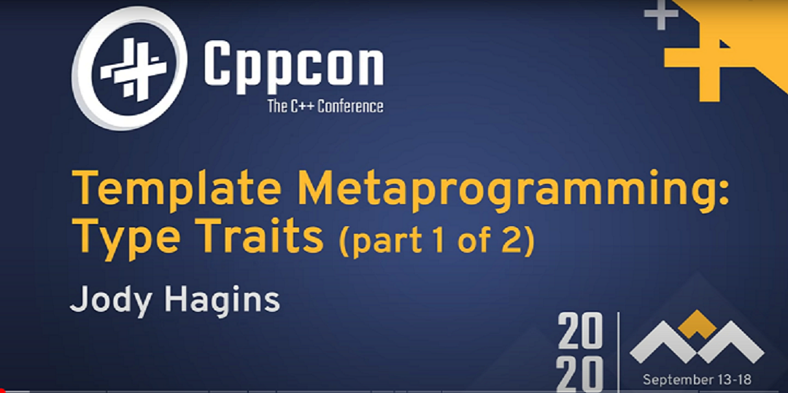
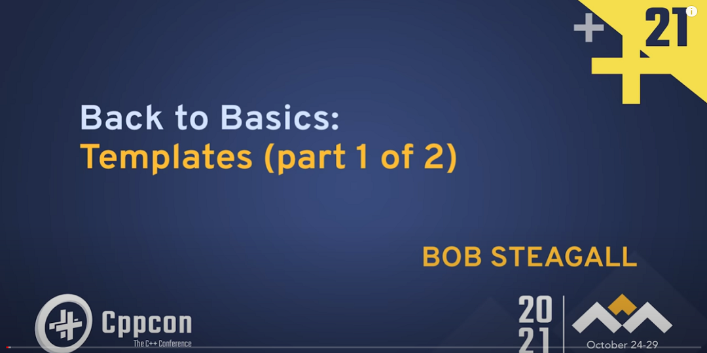
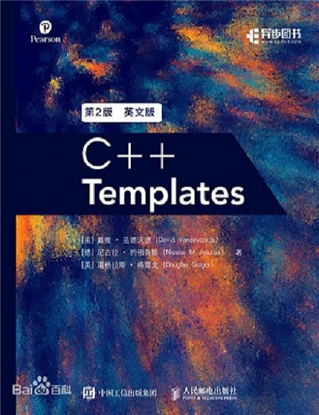
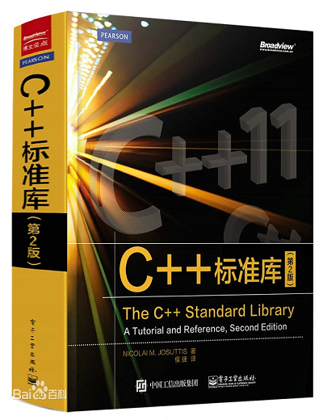

模板元编程推荐资料¶
 Bilibili视频传送门： C++新标准014_模板元编程资料
Bilibili视频传送门： C++新标准014_模板元编程资料
为了更好地入门或提升模板元编程能力，我们整理了 3 个视频，2 本书籍，共五个资料推荐给大家。
1. 视频传送门： CPPCON 2020: Template MetaProgramming¶

第一个推荐的就是 CPPCON 2020 中的视频，标题叫做 Template MetaProgramming：Type Traits，这个视频高屋建瓴地谈到了模板元编程的要素， 并且和普通编程就参数、返回值等做了对比。
该视频还介绍了模板元编程中的约定、规范，然后选择了常用典型的 type traits 做了分析，期间还谈到了各种具体又有深度的概念，比如 void constant 、SFINA 等等。
并且这个视频做了一个很好的分流：
if 你看完这个视频觉得非常受用:
说明你对模板元编程的概念已经掌握的不错了，下一步可以实战操练，比如看看 OneFlow 源码;
else if 你看完视频还是很懵:
那么你需要增强一下基础知识，继续看下面的两个视频;
CPP Conference 有一个 Back to Basics 专题，由一些技术大牛讲解一些看似常见普通但却非常重要的概念， 推荐对模板编程不熟悉的同学看以下两个视频。
2. 视频传送门： CPPCON 2019: Function and Class Templates¶
第二个推荐的是 CPPCON 2019 中的视频，标题叫做 Function and Class Templates。
3. 视频传送门： CPPCON 2021: Back to Basics: Templates¶

第三个推荐的是 CPPCON 2021 中的视频，标题叫做 Back to Basice: Templates。
4. 书籍： C++ Templates¶

这本书几乎涵盖了 C++ 模板相关的所有重要话题，分为三个层次：
- basics
- depth
- design
如果说只能选择一本 C++ 模板相关的书籍，小糖一定只选它。
5. 书籍: C++ 标准库¶

这本书除了可以作工具书之外，还会介绍一些周边概念、内部原理及常见的坑，对我们理解 STL 和模板编程都非常有用， 不过本书的内容大部分都集中在 C++ 11，还没有引入更新的标准。